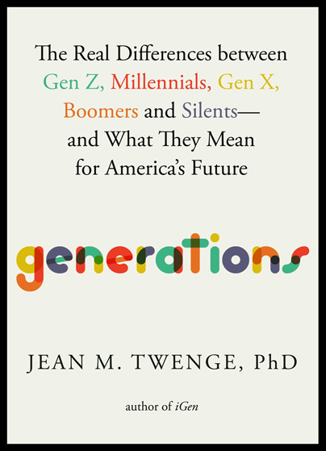

The real differences between Gen Z, Millennials, Gen X, Boomers and Silents, and what they mean for America's future

Twenge, a psychologist, compares what different birth cohorts say and do when surveyed at the same age. She reports differences in areas including mental health, politics, sexual behaviour, gender identity, race attitudes, life goals, substance use, income, trust and materialism.
Her explanation is that generations differ mainly because the technology of their youth differs, rather than because of a single defining event in their teens. Reviewers describe this as the book's distinctive claim, and it is also where critics push hardest (see the Reading Generations and Ratings tabs).
A second thread is "slow life": longer schooling and lifespans push marriage, children and independence later, which she ties to the rise of individualism. A reviewer for Inside Story credits her with separating age, period and cohort effects, which many generational writers skip.
The set-up chapter. It explains why Twenge thinks generations are worth studying, how birth cohorts are defined, and what the surveys can and cannot show. This is where her main argument is introduced: that technology, more than discrete events, shapes a generation.
Her stated approach is to compare generations at the same age, across decades of survey waves. A reviewer notes she also admits generations can be too broad, since people born ten years apart in one group may have lived through different cultures.
The first generation profile and the baseline for the others. A reviewer reports that Twenge finds Silents marrying and having children earlier than later generations, which fits her "slow life" thread: the pace of life transitions lengthens generation by generation.
Profiles the postwar baby-boom cohort. One reviewer notes the book reports Boomers' higher alcohol and drug use persisting as they aged. The span is nearly two decades long, which is the usual target of boundary criticism.
The 15-year cohort between Boomers and Millennials. I could not verify specific findings from this chapter beyond its place in the structure and the survey topics the book covers overall, so I have not invented any.
The cohort that grew up as the internet became mainstream and reached adulthood during the Great Recession era. As with Gen X, I could not verify chapter-specific claims, so this is a pointer to what the structure implies, not a summary.
Likely the chapter where the technology thesis is tested hardest, since this is the cohort that grew up with smartphones and social media. It builds on Twenge's earlier book on this age group (iGen, shown on the cover as "author of iGen"). A Goodreads reader quoted in search results felt the Gen Z coverage was incomplete; I have not verified that.
Twenge's name for the generation others call Alpha. Most of its members are children as I write, so any claims here are necessarily projections from early signals rather than adult outcomes.
Per the author's description, the closing chapter looks ahead at trends in the workplace, consumer behaviour, birth rates and politics. Reviewers describe it as pointing to possibilities for how public opinion may shift as younger cohorts age into the electorate.
The author's site lists four short interludes: the AIDS epidemic; 9/11 and the new war; the Great Recession and its aftermath; and the COVID-19 pandemic. They appear to give space to major events even though Twenge argues technology matters more than events. I could not verify their exact placement or content.
Any claim that "generation X does this" must survive a three-way question: is the difference due to age (everyone does this at that stage of life), period (everyone in a given year changed, whatever their age), or cohort (people born in a given span differ and carry it forward)? Only the third supports a generational story. Twenge's method of comparing groups at the same age and across survey years aims to isolate it, and a reviewer credits her for attending to the distinction. This is my own framing of that idea, not a chapter from the book.
| Effect | Means | Reviewer's illustration (invented) |
|---|---|---|
| Age | Tied to life stage, repeats for every generation | Twenty-somethings in every decade have less savings than fifty-somethings. |
| Period | Affects everyone at one point in time | After a new streaming service launches, viewers of all ages watch more TV online. |
| Cohort | Differs by birth span and persists | People born after a given year still report a habit as adults that older cohorts did not have at the same age. |
| Event-driven view | Twenge's technology view | |
|---|---|---|
| Main driver | Shared events at impressionable ages | Technology of the childhood era |
| Reviewer pushback | Strauss and Howe-style theories cover a whole era of youth, not one event, so Twenge's summary of them is questioned | Technology is built by earlier generations, so credit may circle back to them; and class is downplayed |
Based on reviews by John Quiggin and Matthew Ewer (read via a search summary only).
Enter a birth year to see which of the book's six groups it falls in, using the boundaries from the author's site. Near a boundary, the label is shaky, which is part of the boundary criticism.
Six invented scenarios (the reviewer's own, not from the book). Pick the effect each most looks like.
A difference tied to when a group was born, which stays with that group as it ages.
Twenge's label for the trend toward later marriage, children and independence as schooling and lifespans lengthen.
The growing emphasis on self over group that she links to technology and the slow-life shift. A critic says this overlooks the decline of admiration for "rugged individualism" in the US.
Her term for the generation born 2013 to 2029, otherwise called Generation Alpha.
Comparing generations when they were the same age, using repeated surveys, to separate cohort effects from age.
Not from the book. A label Quiggin uses for people born 1954 to 1963, whom he argues are poorly served by the Boomer label.
| Category | Claude | Dan | Why Claude scored it that way |
|---|---|---|---|
| Ideas | 3.5 | 4.5 | Same-age comparison and the technology thesis are worth testing; the thesis is contested and class is underweighted. |
| Readability | 3.5 | 5.0 | Clear structure, one chapter per group; at about 560 pages and 282 charts it is dense, and one reviewer says the data overwhelms the message. |
| Actionability | 3.0 | 3.0 | Useful for understanding trends in work and parenting, but offers few concrete steps, and acting on birth-year stereotypes is risky. |
| Evidence | 4.0 | 4.5 | 24 national datasets is a real strength, and a reviewer credits the age/period/cohort care; causal claims about technology remain interpretive. |
| Category average | 3.5 | 4.25 | Claude's overall 3.5 matches the category average. No Goodreads figure was readable, so there is no crowd gap to explain. Dan's overall of 5.0 sits 0.75 above his own category average of 4.25. Against Claude he scores Ideas 1.0 higher, Readability 1.5 higher and Evidence 0.5 higher; Actionability is the same (3.0). |
Categories are the same four used for every review: Ideas, Readability, Actionability, Evidence.
Goodreads: average, rating count and star distribution are not available. I tried the book's Goodreads page (the correct edition-merged ID for Twenge's Generations came from a search) but it returned no readable content. I give no numbers rather than estimate them. Amazon was not used. Checked 12 Nov 2026.
What you may have missed: the scholarly critique of generational theory. Quiggin, a professor of economics, argues generations of 15 to 20 years are too large to share a common experience and that race, class and gender often matter more than birth cohort. He notes the Pew Research Center said in May 2023 it would no longer emphasise the generational lens, and compares the Strauss and Howe model to a more respectable astrology. His suggested remedy is five-year birth cohorts broken out by race, gender and class background.
Single-source caveat: I could not find a formal demographer's critique of the age-period-cohort methods in this book. Most of what I found is from reviewers and commentators, not peer-reviewed analyses, and the Pew and astrology points come through Quiggin's article alone. The 2017 American Journal of Psychology review concerns Twenge's earlier iGen, not this book. I did not read the underlying survey data.
Dan rates Generations 5 out of 5. He scores the ideas 4.5 (he did not give a number, so this was confirmed with him), readability 5, actionability 3 and evidence 4.5. Doctor friends recommended it while he was in Costa Rica. It is the first and only book he has read that gave him a picture of how each generation thinks and acts and why, and he found it enjoyable, resonant and something he talks to people about all the time.
He listened to it and found it great for understanding why the generations are the way they are, how they have grown into who they are, how they have changed over time and how each generation shaped the next. It helps him see where people may be coming from when talking about groups in general, including what to expect from colleagues in the workplace. He couldn't put it down.
He scores actionability 3 because it has few action items: it is a book for understanding, not one to keep going back to, though it prompts thinking. He rates the evidence well because it rests on several datasets and a lot of research. The only downside he could name is that the data is strictly American, so it doesn't speak to specifically Canadian generational change, though he feels Canada's societal landmarks are close to the US's, and the book itself points out the limitation.
Written up from Dan's own words (12 Nov 2026). His view stands apart from the Claude and reader views above.
Before accepting any claim about a generation, ask whether it is really about age, period or cohort. Twenge's contribution is to compare groups at the same age with large surveys; her critics' contribution is to remind you that a birth-year label still hides class, race and gender. Hold both.